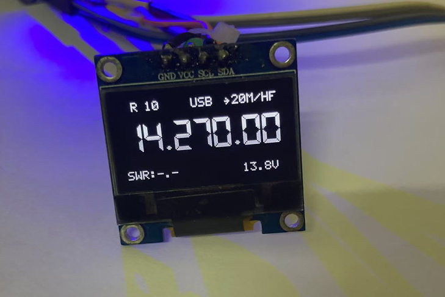

L2N VFO MINI
- → 支持USB/LSB/CW/FT8
- → 中频8MHz
- → 1206屏幕/OLED 0.96 Inch(12864 SSD1306)
- → 8051单片机
- → Si5351(SILICON LABS)/MS5351(国产)
- → 硬件开源资料，软件代码因写的丑不开源
→ 了解详细资料>>
关于：
- → I am eddit， Hook-up wire with (http://www.ul.com) M.f.g, My research focuses are Hook-up wire, Ex: UL1007, UL1015, UL3266, UL2725, UL1354, etc.
- → 花名拖拉机，目前在广东省东莞虎门，从事电线行业，目前掌握的技能，UL电子线相关安规，拖链电缆！
- → 爱好：业余无线电（Radio Amateurs ）我的呼号是: BA7LNN, 可以查找：(https://www.qrz.com/db/BA7LNN)
- → Mobile: +86 137 2586 0789
- → Email: ba7lnn@foxmail.com
VY 73!
© 2023.01-2025.03. BA7LNN . All rights reserved.